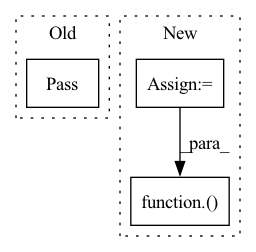

Pattern ID :18217
Before Change
self.sampler = sampler
def __iter__(self):
pass
// indices_of_indices = super().__iter__()
After Change
// It is easiest to use a random access interface to the wrapped
// sampler"s indices, so we just fetch all indices from the wrapped
// sampler
sampler_indices = list(self.sampler.__iter__())
indices_of_indices = super().__iter__()
// Itemgetter fetches the wrapped sampler indices from the positions
// pointed to by DistributedSampler
return iter(itemgetter(*indices_of_indices)( sampler_indices) )
def set_epoch(self, epoch):
Pass set_epoch() through to DistributedSampler and the wrapper oneIn pattern: SUPERPATTERN
Frequency: 3
Non-data size: 3
Instances Fragment ID: 59851505
Project Name: speechbrain/speechbrain
Commit Name: 6058d1bfe79eab25e848dd0174fadf0689fb18c9
Time: 2020-12-18
Author: aku.rouhe@aalto.fi
File Name: speechbrain/data_io/sampler.py
M Class Name: DistributedSamplerWrapper
N Class Name: DistributedSamplerWrapper
M Method Name: __iter__(1)
N Method Name: __iter__(1)
M Parent Class: DistributedSampler
N Parent Class: DistributedSampler
M File Name: speechbrain/data_io/sampler.py
N File Name: speechbrain/data_io/sampler.py
M Start Line: 107
M End Line: 107
N Start Line: 112
N End Line: 116
Before Change
Save the object to the backing persistent storage.
pass
@abc.abstractmethod
def delete(self) -> None:
After Change
rank: int = 0,
) -> None:
paths = self.to_sync(selector)
path_list = []
for path in paths:
relative_path = path.relative_to(self.base_path)
mangled_relative_path = mangler(relative_path, rank)
path_list.append(PathUploadInfo(path=path, mangled_relative_path=mangled_relative_path))
if self.upload_thread is not None and self.upload_thread.is_alive():
self.upload_thread.upload(path_list)
else:
util.preserve_random_state(self._sync_impl)( path_list)
@abc.abstractmethod
def delete(self) -> None:
Fragment ID: 59851507
Project Name: determined-ai/determined
Commit Name: 8deb845fa81d73e417ca139efe4ce12d75095e8e
Time: 2023-02-14
Author: sze-wai.yuen@hpe.com
File Name: harness/determined/tensorboard/base.py
M Class Name: TensorboardManager
N Class Name: TensorboardManager
M Method Name: sync(4)
N Method Name: sync(4)
M Parent Class:
N Parent Class:
M File Name: harness/determined/tensorboard/base.py
N File Name: harness/determined/tensorboard/base.py
M Start Line: 77
M End Line: 77
N Start Line: 93
N End Line: 104
Before Change
@click.group()
def main():
pass
@main.command()
def api():After Change
for key in dir(rest_api):
if key.startswith("_") or key.endswith("_"):
continue
fn = getattr(rest_api, key)
fast_api.post("/" + key, response_model=typing.get_type_hints(fn)["return"])( fn)
uvicorn.run(fast_api, host="0.0.0.0", port=62220, log_level="info", workers=1)
Fragment ID: 59851501
Project Name: homebrewnlp/homebrewnlp-jax
Commit Name: deda7fdef87e5e2c8e30e948f376fc86ad1d8cf7
Time: 2022-05-15
Author: 39779310+ClashLuke@users.noreply.github.com
File Name: inference.py
M Class Name: AnonimousClass
N Class Name: AnonimousClass
M Method Name: main(0)
N Method Name: main(0)
M Parent Class:
N Parent Class:
M File Name: inference.py
N File Name: inference.py
M Start Line: 195
M End Line: 195
N Start Line: 198
N End Line: 207